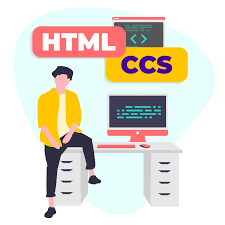
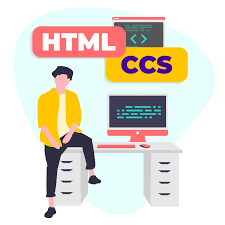
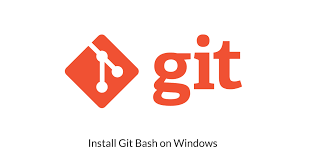
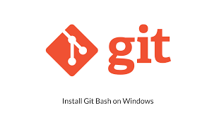

¿Qué es la programación competitiva?
Explora el emocionante mundo de la resolución de problemas algorítmicos.
La programación competitiva es un ámbito de la informática donde los participantes resuelven problemas algorítmicos en un tiempo limitado. Generalmente, se llevan a cabo en concursos o plataformas en línea, donde los programadores deben aplicar su lógica, conocimientos de algoritmos y estructuras de datos para encontrar soluciones óptimas a problemas específicos.
Aspectos Clave de la Programacion competitiva
- Problemas desafiantes: Cada problema puede variar en dificultad y requiere creatividad y análisis para encontrar una solución eficiente.
- Lenguajes de programación: Los participantes pueden usar diversos lenguajes, como C++, Python o Java, dependiendo de la competencia.
- Trabajo bajo presión: Los concursantes deben resolver los problemas rápidamente, lo que agrega un componente de estrés y emoción.
La programación competitiva ayuda a mejorar habilidades de resolución de problemas, pensamiento crítico y manejo del tiempo, y es popular entre estudiantes y profesionales de la informática.
Concursos de programación competitiva
- ACM ICPC (International Collegiate Programming Contest): Uno de los concursos más prestigiosos a nivel universitario, donde equipos de estudiantes resuelven problemas en un tiempo limitado.
- Google Code Jam: Un concurso anual organizado por Google, que desafía a los programadores a resolver problemas complejos en varias rondas eliminatorias.
- Facebook Hacker Cup: Un concurso anual que incluye múltiples rondas, donde los participantes resuelven problemas algorítmicos para avanzar a las etapas finales.
- Topcoder: Una plataforma que organiza competiciones de programación, incluyendo maratones y concursos de algoritmos, con una comunidad activa de programadores.
- Codeforces: Una plataforma de concursos en línea que organiza competiciones regulares, y es muy popular entre la comunidad de programación competitiva.
- AtCoder: Un sitio japonés que organiza concursos de programación, con una variedad de problemas y niveles de dificultad.
- CodeChef: Una plataforma que organiza concursos mensuales y ofrece un entorno para mejorar habilidades de programación a través de prácticas y competiciones.
Estos concursos no solo son una excelente manera de desafiar tus habilidades, sino también de conectar con otros programadores y aprender nuevas técnicas.
Galería
 

 
